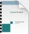
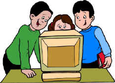

Learning how to use Cormas
Smalltalk tutorials
Before to start with Cormas, you have to become familiar with Smalltalk and VisualWorks.

VisualWorks comes with full documentation (on VW7.6nc/doc/). Here are the main docs:- The Application Developer's Guide that explains the principles of Smalltalk: AppDevGuide.pdf
- The Basic Libraries Guide that presents the core classes (Number, Collection, ...): BasicLibraries.pdf
- The guide for developing GUI (Graphic User Interfaces): GUIDevGuide.pdf
Some video tutorials are available online from the Cincom
website: 
Some books on Smalltalk are available on
Stéphane Ducasse web page.
Cormas tutorials
The best way to learn how to use Cormas is to start by looking at some existing models, to become familiar with the main graphical user interfaces. The Game of Life proposed by John Conway, a very simple but yet fascinating cellular automata, has been implemented with Cormas. You will learn how to load it, look at the code and run simulations. Several examples are proposed here: FireAgent model (a typical Cormas model), and StupidModel (a benchmark model to allow comparison with other popular agent-based simulation platforms). ECEC is a complete tutorial starting from a full UML description until implementation and analysis. Before to start the tutorials, be sure that Cormas is properly installed on your computer (see detailed instructions here).
| Tutorial 1 : Game of Life (Conway) |
 |
||
|
|||
| Tutorial 2
: FireAgent Model Download the .zip files (password = "bonjour") to work offline |
|||
|
|||
| Tutorial
3 : StupidModel Download the .zip files (password = "bonjour") to work offline |
|||
This model has been used as a benchmark model to compare existing agent-based simulation platforms. |
|||
| Tutorial 4 : ECEC (PDF) | |||
|
|||
| Tutorial
5 : GUI (GoogleDoc) |
|||
|
This tutorial helps to
design and implement GUI (Grafic User Interfaces) for
Cormas.
|
Other tutorials
Video to learn how to use the Activity Diagram Editor: these videos have been made by using the Diffuse model:
| Last update : february 03, 2012 |